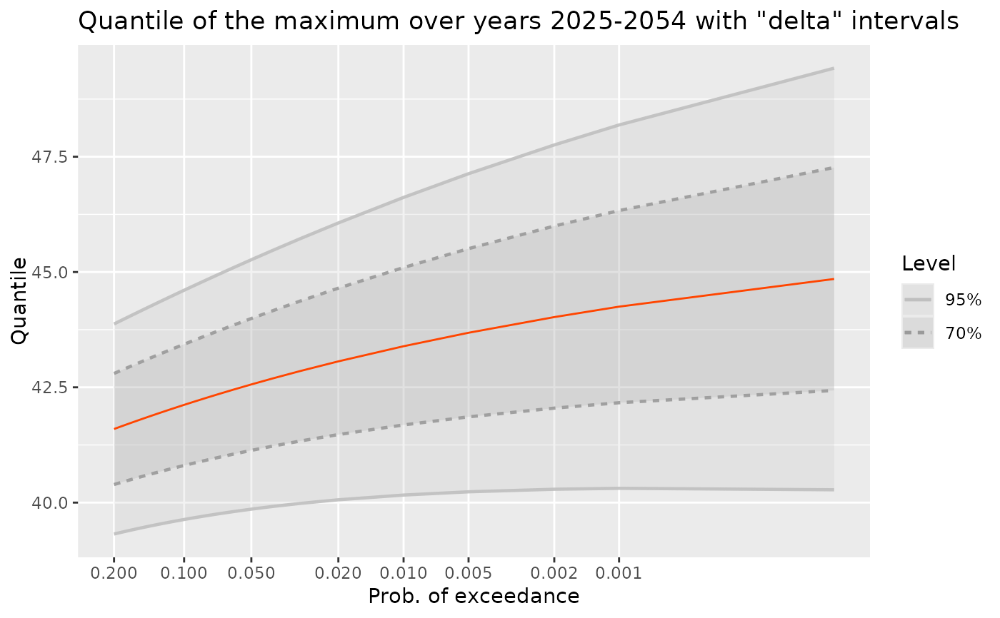
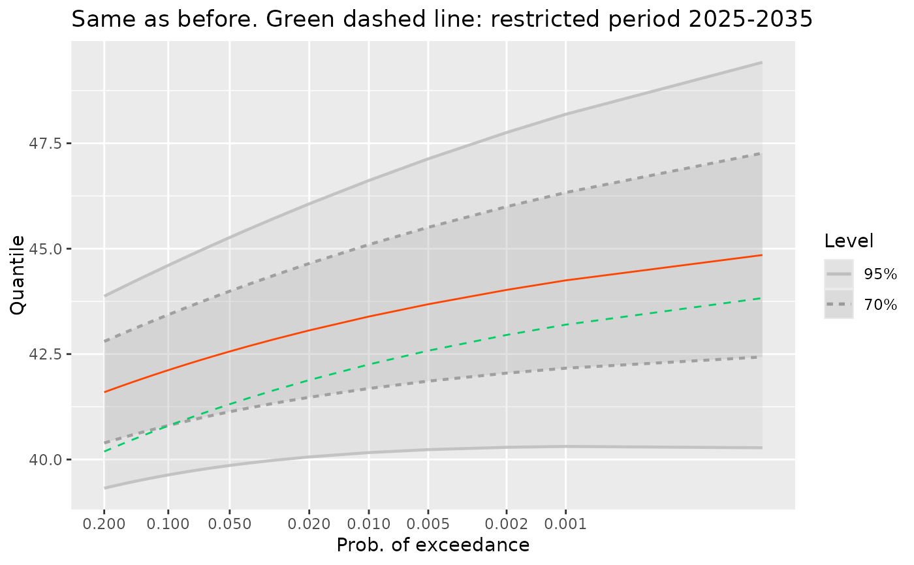

Compute the quantiles for the random maximum on a given period or collection of blocks of interest.
A TVGEV model object.
A numeric vector giving the (non-exceedance) probabilities at which the quantiles will be computed.
A vector that can be coerced to the class
"Date" giving the beginnings of the blocks for a period
of interest.
The confidence level.
Optional vector of coefficients. Caution not tested yet.
Character indicating the method to be used
for the confidence intervals on the quantiles. The "delta"
method a.k.a. Wald method) with the choice "delta" and
the profile likelihood with the choice "proflik". The
choice "PLODE" corresponds to an experimental
computation of the profile likelihood intervals using Ordinary
Differential Equations. This choice is only possible with
nieve >= 0.1.5 because the Hessian for the GEV
log-likelihood is needed.
Character indicating what type of object will be
returned. When out is "data.frame" the output
actually has the (S3) class "quantMax.TVGEV" inheriting
from "data.frame". A few methods exist for this class.
Integer level of verbosity.
Not used.
An object with its class depending on the value of
out.
out = "data.frame" An object inheriting
from the "data.frame" class which can be used
in methods such as autoplot.
out = "array" A 3-dimensional array with dimensions, probability, type of result (Quantile, Lower or Upper confidence limit) and confidence level.
Let \(M^\star := \max_{b} Y_b\) be the maximum over the blocks \(b\) of interest. Since the blocks are assumed to be independent the distribution function of \(M^\star\) is given by $$ F_{M^\star}(m^\star; \, \boldsymbol{\psi}) = \prod_{b} F_{\texttt{GEV}}(m^\star; \, \boldsymbol{\theta}_b) $$ and it depends on the vector \(\boldsymbol{\psi}\) of the model parameters through \(\boldsymbol{\theta}_b(\boldsymbol{\psi})\). For a given probability \(p\), the corresponding quantile \(q_{M^\star}(p;\,\boldsymbol{\psi})\) is the solution \(m^\star\) of \(F^\star(m^\star;\,\boldsymbol{\psi}) = p\). The derivative of the quantile w.r.t. \(\boldsymbol{\psi}\) can be obtained by the implicit function theorem and then be used for the inference e.g., using the "delta method".
df <- within(TXMax_Dijon, Date <- as.Date(sprintf("%4d-01-01", Year)))
## fit a TVGEV model. Only the location parameter is TV.
tv <- TVGEV(data = df, response = "TXMax", date = "Date",
design = breaksX(date = Date, breaks = "1970-01-01", degree = 1),
loc = ~ t1 + t1_1970)
qM1 <- quantMax(tv, level = c(0.95, 0.70))
date2 <- as.Date(sprintf("%4d-01-01", 2025:2054))
qM2 <- quantMax(tv, date = date2, level = c(0.95, 0.70))
head(qM2)
#> Prob ProbExc Quant L U Level
#> 1 0.80 0.20 41.59590 40.39165 42.80014 0.7
#> 2 0.81 0.19 41.63825 40.42609 42.85041 0.7
#> 3 0.82 0.18 41.68217 40.46162 42.90272 0.7
#> 4 0.83 0.17 41.72783 40.49836 42.95730 0.7
#> 5 0.84 0.16 41.77542 40.53644 43.01440 0.7
#> 6 0.85 0.15 41.82519 40.57603 43.07435 0.7
gg <- autoplot(qM2, fillConf = TRUE)
gg <- gg + ggtitle("Quantile of the maximum over years 2025-2054 with \"delta\" intervals")
gg

## Use the 'autolayer' method for a quick comparison
qM3 <- quantMax(tv,
date = as.Date(sprintf("%4d-01-01", 2025:2035)),
level = c(0.95, 0.70))
gg + autolayer(qM3, colour = "SpringGreen3", linetype = "dashed") +
ggtitle("Same as before. Green dashed line: restricted period 2025-2035")

## Compare with a simulation. Note that 'sim' has class "bts" and
## is essentially a numeric matrix. Increase 'nsim' to get a more
## precise estimate of the high quantiles
sim <- simulate(tv, newdate = date2, nsim = 10000)
M <- apply(sim, 2, max)
probs <- c(0.9, 0.95, 0.98, 0.99, 0.995, 0.998)
qSim <- quantile(M, prob = probs)
dfSim <- data.frame(Prob = probs, ProbExc = 1 - probs, Quant = qSim)
gg + geom_point(data = dfSim, mapping = aes(x = ProbExc, y = Quant))
if (FALSE) { # \dontrun{
qM3 <- quantMax(tv, level = c(0.95, 0.70), confint = "proflik")
gg3 <- autoplot(qM3, fillConf = TRUE) +
ggtitle(paste("Quantile of the maximum over years 2025-2054 with",
" \"profile\" intervals"))
gg3
} # }